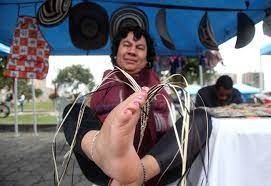

EMPRENDIMIENTO
La autorrealización, la búsqueda de autonomía, libertad e independencia, así como la posibilidad de innovar y crear son algunos de los factores críticos que influyen en la intención emprendedora de las personas con discapacidad.

ORIENTACION SOCIOLABORAL
La inclusión socio-laboral de personas con discapacidad es un proceso donde se debe tener un objetivo final que permita integrar la equidad frente a sus compañeros de trabajo y así lograr disminuir la tasa de desempleo de esta población, lo que permitiría tener trabajos.